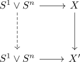
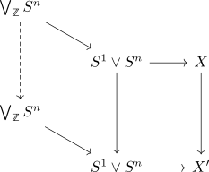
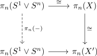
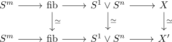
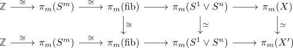

classification of cw complexes with four cells and one in dimension 1 and stability assumption
Proposition
Let $X$ be a CW Complex with cells in dimension $0,1,n,m$ with $n \leq m$. Then
- if $n = 1$, this implies $X \simeq S^1 \vee S^1 \vee S^m$
- if $n > 1$ and $n < m \leq 2n$ (todo: find right index for stable range), then CW complexes are classified finite tuples $(g_1,...,g_n)$ for $n \in \mathbb{N}_0$, $g_i \in \pi_{m-1}(S^n)$ modulo the actions given by a) flipping the order, i.e. $(g_1,...,g_n) \sim (g_n,...,g_1)$ b) acting by the sign on $\pi_{m-1}(S^n)$, i.e. $(g_1,...,g_n) \sim (-g_1,...,-g_n)$
Proof
1)
follows from $\pi_{m-1}(S^1 \vee S^1) \cong 0$.
2)
Recall that there exist at most $\pi_{m-1}(S^1 \vee S^n) \cong \bigoplus_{\mathbb{Z}} \pi_{m-1}(\bigvee S^n) \cong \bigoplus_{\mathbb{Z}} \pi_{m-1}(S^n)$ many cw complexes (cf. classification techniques for low cell cw complexes, here we have used low homotopy group of S^n wedge S^1). Now the pointed automorphisms of S^1 wedge S^n act on $\pi_{m-1}(S^n)$ by postcomposition and there exist at most as many cw complexes as there exist orbits under this action. Here the action on $\bigoplus_{\mathbb{Z}} \pi_m$ is given by shifting the elements, flipping the order and acting by the sign.
So now assume that we have equivalent $X,X'$, given by $(g_{i},...,g_{i_k}), (g_{j},...,g_{j_l}) \in \bigoplus_{\mathbb{Z}} \mathbb{Z}$. Then choose an equivalence $f: X \rightarrow X'$. cellular approximation implies that there exists a map

We claim that this map is an equivalence $S^1 \vee S^n \rightarrow S^1 \vee S^n$: By the connectivity of $S^1 \vee S^n \rightarrow X, S^1 \vee S^n \rightarrow X'$ (todo indices), we get that the map is an isomorphism on $\pi_0,...,\pi_n$. Moreover, the classification of pointed automorphisms of S^1 wedge S^n shows that being an equivalence $S^1 \vee S^n \rightarrow S^1 \vee S^n$ is equivalent to being an equivalence on $\pi_1$ and $\pi_n$.
This shows that the dashed map is an equivalence

Alternatively (to sketch the argument), we may use the universal cover and pi_1/pi_0 condition for equivalences and pass to the universal covers.

Here the map $\bigvee_{\mathbb{Z}} S^n \rightarrow \bigvee_{\mathbb{Z}} S^n$ is an equivalence if and only if it is one on homology (cf. homology isomorphism between simply connected spaces as weak equivalence) and by Hurewicz if and only if it is an isomorphism on $\pi_n$.
Thankfully we have

which shows that the map is a $\pi_n$ equivalence.
Now we may pass to the fibers

Now homotopy excision theorem / blakers massey for a cofiber shows that the maps $S^m \rightarrow \mathrm{fib}$ are <enough todo> conencted and hence passing to $\pi_m$ shows

and this commutative diagram shows that $(g_{i},...,g_{i_k}) \sim (g_{j},...,g_{j_l})$ are equivalent under the action
- todo: add to the last sentence